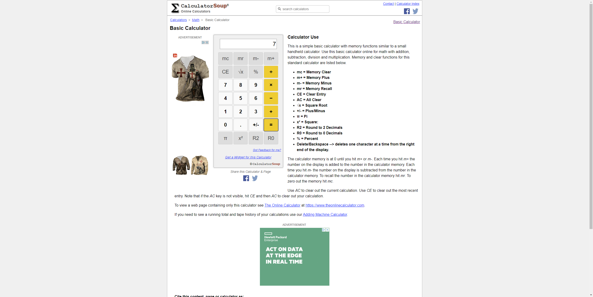

Features
1 features passed
3 features failed,
0 skipped
Scenarios
9 scenarios passed
4 scenarios failed,
0 skipped,
0 others
Steps
73 steps passed
4 steps failed,
0 skipped,
0 others
Timeline (seconds)
-
This is to test calculation feature of the Windows Calculator App Aug 16, 2022 01:08:47 pm FailSample user story details (As a ...., I want to ...., So that .... ), JIRA ticket references etc can be provided here00 00 48.098cancel Scenario Outline: Basic test of "
" operation using data table first_operand second_operand operation output 20 30 + 50 2 5 x 7 100 40 ÷ 2.5 675.86 46.897 - 628.963 @regression @Calculator @WinApp @multiple-
check_circleBasic test of "+" operation using data table@regression @Calculator @WinApp @multiple
-
check_circleGiven I have keyed "20" into the calculator
-
check_circleAnd I have clicked on "+" button
-
check_circleAnd I have keyed "30" into the calculator
-
check_circleWhen I press on "=" button to get the calculation result
-
check_circleThen "50" should be displayed on the result screen
-
-
cancelBasic test of "x" operation using data table@regression @Calculator @WinApp @multiple
-
check_circleGiven I have keyed "2" into the calculator
-
check_circleAnd I have clicked on "x" button
-
check_circleAnd I have keyed "5" into the calculator
-
check_circleWhen I press on "=" button to get the calculation result
-
cancelThen "7" should be displayed on the result screen
-
check_circlecom.winapps.apphooks.ApplicationHooks.screenshotOnFailure(io.cucumber.java.Scenario)
Basic_test_of_"x"_operation_using_data_table
-
-
check_circleBasic test of "÷" operation using data table@regression @Calculator @WinApp @multiple
-
check_circleGiven I have keyed "100" into the calculator
-
check_circleAnd I have clicked on "÷" button
-
check_circleAnd I have keyed "40" into the calculator
-
check_circleWhen I press on "=" button to get the calculation result
-
check_circleThen "2.5" should be displayed on the result screen
-
-
check_circleBasic test of "-" operation using data table@regression @Calculator @WinApp @multiple
-
check_circleGiven I have keyed "675.86" into the calculator
-
check_circleAnd I have clicked on "-" button
-
check_circleAnd I have keyed "46.897" into the calculator
-
check_circleWhen I press on "=" button to get the calculation result
-
check_circleThen "628.963" should be displayed on the result screen
-
00 00 15.506check_circle Scenario: Division of two numbers@divide @Calculator @WinApp-
check_circleGiven I am on standard calculator screen
-
check_circleWhen I clicked "3" into the calculator
-
check_circleAnd I clicked on "÷" button
-
check_circleAnd I clicked "2" into the calculator
-
check_circleAnd I clicked on "=" button
-
check_circleThen "1.5" should be displayed on the result screen
00 00 15.504check_circle Scenario: Addition of two numbers@add @smoke @Calculator @WinApp-
check_circleGiven I am on standard calculator screen
-
check_circleWhen I clicked "3" into the calculator
-
check_circleAnd I clicked on "+" button
-
check_circleAnd I clicked "9" into the calculator
-
check_circleAnd I clicked on "=" button
-
check_circleThen "12" should be displayed on the result screen
00 00 18.097check_circle Scenario: Multiplication of two numbers@multiply @Calculator @WinApp-
check_circleGiven I am on standard calculator screen
-
check_circleWhen I keyed "56523" into the calculator
-
check_circleAnd I clicked on "x" button
-
check_circleAnd I keyed "876.59" into the calculator
-
check_circleAnd I clicked on "=" button
-
check_circleThen "49,547,496.57" should be displayed on the result screen
00 00 20.992check_circle Scenario: Subtraction of two numbers@subtract @Calculator @WinApp-
check_circleGiven I am on standard calculator screen
-
check_circleWhen I keyed "5897547878623" into the calculator
-
check_circleAnd I clicked on "-" button
-
check_circleAnd I keyed "2758.578" into the calculator
-
check_circleAnd I clicked on "=" button
-
check_circleThen "5,897,547,875,864.422" should be displayed on the result screen
-
-
This is to test Notepad features Aug 16, 2022 01:10:45 pm PassSample user story details (As a ...., I want to ...., So that .... ), JIRA ticket references etc can be provided her00 00 05.148check_circle Scenario: Launch notepad, verify "About Notepad" option, enter some text in notepad and save the file.@Notepad @WinApp
-
check_circleGiven I have launched Notepad application
-
check_circleWhen I click on "Help" menu option
-
check_circleAnd I select "About Notepad" option
-
check_circleThen I view "Microsoft Windows" text appearing on screen
-
check_circleWhen I click on "OK" button
-
check_circleThen Mouse cursor goes to the "Text Editor" window on notepad application
-
-
Login page feature Aug 16, 2022 01:10:50 pm Fail00 00 03.675cancel Scenario: Login page title@WebApp
-
check_circleGiven user is on login page
-
check_circleWhen user gets the title of the page
-
cancelThen page title should be "Login - My Store1"
-
check_circlecom.winapps.apphooks.ApplicationHooks.screenshotOnFailure(io.cucumber.java.Scenario)Login_page_title

00 00 03.407cancel Scenario: Forgot Password link@WebApp-
check_circleGiven user is on login page
-
cancelThen forgot your password link should be displayed
-
check_circlecom.winapps.apphooks.ApplicationHooks.screenshotOnFailure(io.cucumber.java.Scenario)Forgot_Password_link

-
-
This is to test calculation feature of the Windows Calculator App and verifying the result in a web app Aug 16, 2022 01:10:57 pm FailSample user story details (As a ...., I want to ...., So that .... ), JIRA ticket references etc can be provided here00 00 33.095check_circle Scenario: Addition of two numbers - To test pass on web@madetopass @WebApp @Calculator @WinApp @addwinweb
-
check_circleGiven I am on standard calculator screen
-
check_circleWhen I clicked "4" into the calculator
-
check_circleAnd I clicked on "+" button
-
check_circleAnd I clicked "3" into the calculator
-
check_circleAnd I clicked on "=" button
-
check_circleThen "7" should be displayed on the result screen
-
check_circleAnd I note down result and close Windows Calculator App and Open WebApp
-
check_circleWhen I did a sum "+" operation of "4" and "3" and clicked on "=" button
-
check_circleThen I get "7" as result and this is same as result shown by Windows calculator App
00 00 33.709cancel Scenario: Addition of two numbers - To test failure on web@madetofail @WebApp @Calculator @WinApp @addwinweb-
check_circleGiven I am on standard calculator screen
-
check_circleWhen I clicked "4" into the calculator
-
check_circleAnd I clicked on "+" button
-
check_circleAnd I clicked "3" into the calculator
-
check_circleAnd I clicked on "=" button
-
check_circleThen "7" should be displayed on the result screen
-
check_circleAnd I note down result and close Windows Calculator App and Open WebApp
-
check_circleWhen I did a sum "+" operation of "4" and "3" and clicked on "=" button
-
cancelThen I get "9" as result and this is same as result shown by Windows calculator App
-
check_circlecom.winapps.apphooks.ApplicationHooks.screenshotOnFailure(io.cucumber.java.Scenario)Addition_of_two_numbers_-_To_test_failure_on_web
-
-
@add 1Passed: 1
Timestamp TestName Status Aug 16, 2022 01:09:51 pm Addition of two numbers Pass -
@WebApp 1 3Passed: 1 Failed: 3
Timestamp TestName Status Aug 16, 2022 01:10:50 pm Login page title Fail Aug 16, 2022 01:10:54 pm Forgot Password link Fail Aug 16, 2022 01:10:57 pm Addition of two numbers - To test pass on web Pass Aug 16, 2022 01:11:31 pm Addition of two numbers - To test failure on web Fail -
@WinApp 9 3Passed: 9 Failed: 3
Timestamp TestName Status Aug 16, 2022 01:08:47 pm Basic test of " " operation using data table Fail Aug 16, 2022 01:08:47 pm Basic test of "+" operation using data table Pass Aug 16, 2022 01:08:59 pm Basic test of "x" operation using data table Fail Aug 16, 2022 01:09:10 pm Basic test of "÷" operation using data table Pass Aug 16, 2022 01:09:22 pm Basic test of "-" operation using data table Pass Aug 16, 2022 01:09:35 pm Division of two numbers Pass Aug 16, 2022 01:09:51 pm Addition of two numbers Pass Aug 16, 2022 01:10:06 pm Multiplication of two numbers Pass Aug 16, 2022 01:10:24 pm Subtraction of two numbers Pass Aug 16, 2022 01:10:45 pm Launch notepad, verify "About Notepad" option, enter some text in notepad and save the file. Pass Aug 16, 2022 01:10:57 pm Addition of two numbers - To test pass on web Pass Aug 16, 2022 01:11:31 pm Addition of two numbers - To test failure on web Fail -
@regression 3 2Passed: 3 Failed: 2
Timestamp TestName Status Aug 16, 2022 01:08:47 pm Basic test of " " operation using data table Fail Aug 16, 2022 01:08:47 pm Basic test of "+" operation using data table Pass Aug 16, 2022 01:08:59 pm Basic test of "x" operation using data table Fail Aug 16, 2022 01:09:10 pm Basic test of "÷" operation using data table Pass Aug 16, 2022 01:09:22 pm Basic test of "-" operation using data table Pass -
@addwinweb 1 1Passed: 1 Failed: 1
Timestamp TestName Status Aug 16, 2022 01:10:57 pm Addition of two numbers - To test pass on web Pass Aug 16, 2022 01:11:31 pm Addition of two numbers - To test failure on web Fail -
@smoke 1Passed: 1
Timestamp TestName Status Aug 16, 2022 01:09:51 pm Addition of two numbers Pass -
@Calculator 8 3Passed: 8 Failed: 3
Timestamp TestName Status Aug 16, 2022 01:08:47 pm Basic test of " " operation using data table Fail Aug 16, 2022 01:08:47 pm Basic test of "+" operation using data table Pass Aug 16, 2022 01:08:59 pm Basic test of "x" operation using data table Fail Aug 16, 2022 01:09:10 pm Basic test of "÷" operation using data table Pass Aug 16, 2022 01:09:22 pm Basic test of "-" operation using data table Pass Aug 16, 2022 01:09:35 pm Division of two numbers Pass Aug 16, 2022 01:09:51 pm Addition of two numbers Pass Aug 16, 2022 01:10:06 pm Multiplication of two numbers Pass Aug 16, 2022 01:10:24 pm Subtraction of two numbers Pass Aug 16, 2022 01:10:57 pm Addition of two numbers - To test pass on web Pass Aug 16, 2022 01:11:31 pm Addition of two numbers - To test failure on web Fail -
@subtract 1Passed: 1
Timestamp TestName Status Aug 16, 2022 01:10:24 pm Subtraction of two numbers Pass -
@Notepad 1Passed: 1
Timestamp TestName Status Aug 16, 2022 01:10:45 pm Launch notepad, verify "About Notepad" option, enter some text in notepad and save the file. Pass -
@divide 1Passed: 1
Timestamp TestName Status Aug 16, 2022 01:09:35 pm Division of two numbers Pass -
@madetopass 1Passed: 1
Timestamp TestName Status Aug 16, 2022 01:10:57 pm Addition of two numbers - To test pass on web Pass -
@madetofail 1Failed: 1
Timestamp TestName Status Aug 16, 2022 01:11:31 pm Addition of two numbers - To test failure on web Fail -
@multiply 1Passed: 1
Timestamp TestName Status Aug 16, 2022 01:10:06 pm Multiplication of two numbers Pass -
@multiple 3 2Passed: 3 Failed: 2
Timestamp TestName Status Aug 16, 2022 01:08:47 pm Basic test of " " operation using data table Fail Aug 16, 2022 01:08:47 pm Basic test of "+" operation using data table Pass Aug 16, 2022 01:08:59 pm Basic test of "x" operation using data table Fail Aug 16, 2022 01:09:10 pm Basic test of "÷" operation using data table Pass Aug 16, 2022 01:09:22 pm Basic test of "-" operation using data table Pass
-
java.lang.AssertionError 2
Timestamp TestName StackTrace Aug 16, 2022 01:09:05 pm Then "7" should be displayed on the result screen Aug 16, 2022 01:10:52 pm Then page title should be "Login - My Store1" -
org.junit.ComparisonFailure 1
Timestamp TestName StackTrace Aug 16, 2022 01:12:00 pm Then I get "9" as result and this is same as result shown by Windows calculator App -
org.openqa.selenium.NoSuchElementException 1
Timestamp TestName StackTrace Aug 16, 2022 01:10:55 pm Then forgot your password link should be displayed
Dashboard
Features
4
Scenarios
13
Steps
77
Start
Aug 16, 2022 01:08:44 pm
End
Aug 16, 2022 01:12:10 pm
Time Taken
00 03 26.124
Environment
| Name | Value |
|---|---|
| AppName | WinApps Test Suite |
| user | dee-sdpkm |
| version | 21H2 |
| build | 1.0.0-SNAPSHOT |
| os | Windows 10 Pro |
Categories
| Name | Passed | Failed | Skipped | Passed % |
|---|---|---|---|---|
| @add | 1 | 0 | 0 | 100% |
| @WebApp | 1 | 3 | 0 | 25% |
| @WinApp | 9 | 3 | 0 | 75% |
| @regression | 3 | 2 | 0 | 60% |
| @addwinweb | 1 | 1 | 0 | 50% |
| @smoke | 1 | 0 | 0 | 100% |
| @Calculator | 8 | 3 | 0 | 72.727% |
| @subtract | 1 | 0 | 0 | 100% |
| @Notepad | 1 | 0 | 0 | 100% |
| @divide | 1 | 0 | 0 | 100% |
| @madetopass | 1 | 0 | 0 | 100% |
| @madetofail | 0 | 1 | 0 | 0% |
| @multiply | 1 | 0 | 0 | 100% |
| @multiple | 3 | 2 | 0 | 60% |